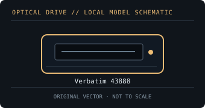

[ OPTICAL DRIVES // IDENTIFIED EXTERNAL MODEL ]
Verbatim 43888
USB-C external slimline Blu-ray writer sold as the Ultra HD 4K model; 4K disc playback is a software/host feature rather than an assumed OS capability.

IDENTIFICATION: Match the exact label and suffix to manufacturer documentation. Ratings are maximums under supported-media conditions, not guaranteed sustained speeds.
Model-specific specifications
| Catalog subcategory | External Blu-ray drives |
|---|---|
| Exact model / SKU | Verbatim 43888 |
| BD formats and read rates | BD-ROM, BD-R/BD-R DL, BD-RE; BDXL up to 100 GB and M-DISC media are supported. UHD Blu-ray playback is advertised separately. Read: BD-ROM, BD-R and BD-RE up to 4×; UHD Blu-ray playback support is claimed, but playback is not a data-read speed rating. |
| BD write formats and rates | BD-R and BD-R DL up to 6×; BDXL up to 4×; BD-RE up to 2×. |
| DVD formats and read rates | DVD-ROM, DVD±R, DVD±R DL, DVD±RW, DVD-RAM. Read: DVD formats up to 8×. |
| DVD write formats and rates | DVD±R up to 8×; DVD±R DL 6×; DVD+RW 8×; DVD-RW 6×; DVD-RAM 5×. |
| CD formats and read rates | CD-ROM, CD-R and CD-RW. Read: CD-ROM/CD-R/CD-RW up to 24×. |
| CD write formats and rates | CD-R up to 24×; CD-RW up to 24×. |
| USB interface and power | USB 3.2 Gen 1 Type-C data connection (USB-A adapter/cable included); USB bus-powered, no separate AC adapter. |
| Host compatibility and software | Manufacturer bundles Nero Burn & Archive for Windows. macOS can access supported data discs, but bundled software is Windows-only. UHD Blu-ray playback software is not included and requires a qualified compatible PC, display and HDCP path. |
| Model caveat | The product page distinguishes UHD playback from writing; it does not claim the drive writes UHD Blu-ray. 4K playback capability does not identify the data-read rate or prove host/software compatibility. |
Host, media and preservation notes
- Separate drive-level disc support from playback application, region policy, codec licensing and any protected-video/HDCP requirements.
- Use supported media and a stable data/power connection; firmware, media quality, layer, recording mode and USB bandwidth affect actual speed.
- For an archival image, log drive model/firmware, host OS, software, media type, verification result and checksums.
Manufacturer and manual sources
- Verbatim — 43888 external slimline Blu-ray writerManufacturer product page for interface, power and media capabilities.
- Verbatim — 43888/43889 USB-C quick-start guide (PDF)Manufacturer guide for exact model setup, USB-C connection and software caveats.
- RS — Verbatim 43888 technical specification sheet (PDF)Product technical sheet with format-specific CD, DVD and Blu-ray read/write rates.
Published X-speed ratings are maximum format-specific rates. Actual operation depends on supported media, software, host throughput and operating conditions.